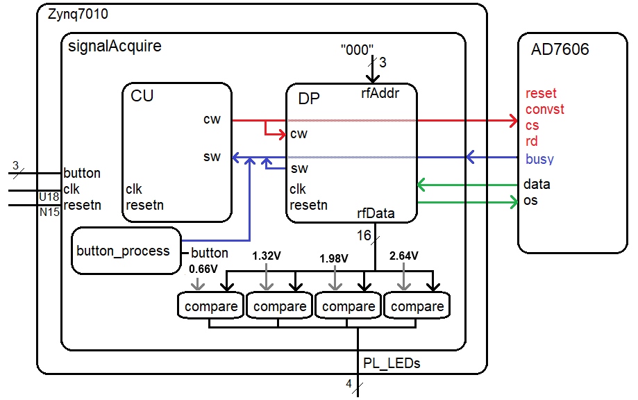

Lab 3 - Data Acquisition, Storage and Display
Lab Overview
The signal acquire module contains a datapath and control necessary to initiate and acquire all 8 channels of the AD7606 chip and store them into a register file. And yes, we will only be using the first two channels on our oscilloscope, we will gather the extra 6 channels.
Architecture
You will build the signal acquisition engine using a datapath and control approach.
You will use a testbench to verify that your design works as a simulation. In order to verify proper operation of the synthesized design, you will ask the register file for the value of register 0 and send the output to four comparators. The comparators will compare the channel 1 converted value against the 16-bit 2's complement value for 1, 2, 3 and 4 volts.
The button process is similar to the last lab, it will look for a change in the logic level of one of the buttons (which I don't care). When the button process sees a change in this button's logic level, it will enable the trigger status word for one clock cycle.
Control Unit
The control unit should follow the processes outlined in class. Use a model where you separate the state process from the output process. Liberally use constants and alias to make your code more readable. Use easy to understand state names as these are what you will see during your simulation.Datapath
The datapath contains two counter/comparator pairs to generate a short and long delay. You should configure the long delay to be around 1.3ms in your synthesized design.CONSTANT LONG_DELAY_50Mhz_COUNTS : STD_LOGIC_VECTOR(LONG_DELAY_50Mhz_CONST_WIDTH - 1 downto 0) := x"00FFFF";You should then include the package in your datapath.vhdl file and then you can use this constant in the long delay comparator instantation. This should look something like the following.
longDelayCompare_inst: genericCompare
GENERIC MAP(24)
PORT MAP( x => longDelayCounter,
y => LONG_DELAY_50Mhz_COUNTS,
g => open,
l => open,
e => sw(LONG_DELAY_DONE_SW_BIT_INDEX));
In addition to the two counter/comparator pairs, your datapath will also need to include
a register file to store the 16-bit values returned from the AD7606
Register File
You will use the register file to store the 16-bit data from all 8 channels. Thus, your register file will have 8-storage location (registers), that can store 16-bits each. The internal organization of the register file is shown in the following figure.
To write data into the register file, you:
- Assert data on the D input
- Assert the index of the register you want to store the data to on the wrAddr input
- Assert the write control input
VHDL Code
The files below will give you a solid start on this lab. Note package files are a bit tricky to find. To do so, go to the Sources pane and click on the 'libraries' tab. You should find them under Design Sources -> VHDL -> xil_defaultlib- basicBuildingBlocksVhdl.zip
This folder contains all the VHDL basic building blocks you can use to build the datapath elements as well as the package declaration that you will need to include at the top of any file which uses one of these components. Read the comments at the top of the package file for instructions on how to use this package. You should put your register file in this folder and you will need to add the component declaration for the register file in the package file. - an7606.vhd
This is a simulation only artifact that emulates the behavior of the AD7606 chip. Use this component in your testbench simulation to verify operation of your design. - signalAcquire_Package.vhd
This package contains:- Project specific component declarations
- Project specific simulation clk_period
- Constants defining the width of control and status words
- Indexes for specific bits of the control and status words
- Constants for four voltages represented as 16-bit 2's complement values
- signalAcquire_tb.vhd
This is the top-level simulation file. There is nothing in here to edit. You should make your component declarations to match the naming in this file. This will ensure that your naming works with the xdc file (the pin assignment file). - signalAcquire_tbWaveSetup.tcl
This is the waveform setup file that you will use in your simulation. Add this file to your simulation sources and it will automatically load every time you run a simulation, a great time saver. - signalAcquireFsm.vhdl
This is the control unit. You should look at the example code posted in the lecture notes for pointers on the logic and code syntax. - signalAcquireDatapath.vhdl
This is the datapath. You will need to instantiate basic building blocks and route the status and control word signals correctly. You should use lots of constants in your signalAcquire package to make your VHDL code more intuitive and thus easier to debug. - signalAcquire.vhd
This is the top-level synthesis module. Use the signal acquire package to store the component declarations for the datapath and control. - signalAcquire.xdc
This is the pin assignment file for the signalAcquire module. You will need to use the ALINX AX7010 Board Schematic posted on the class web page to determine the pins for the missing entries in this file.
Simulation
To help you in debugging, I've provided some excerpts from my testbench simulation. If you right-click on the images and open in a new window, they will enlarge.| Up To 200ns |  |
| At 1,311,800ns |  |
| At 1,316,200ns |  |
| At 1,318,200ns |  |
| At 1,321,700ns |  |
Synthesis
You will need to complete the xdc (pin assignment) file before you can successfully synthesize your design. This will require you to work through the schematic and look for the connections between the devices and pins on the Zynq chip. You will also need to open up the AN706 ADC board schematic to identity which pins on the 40-pin connector are connected to the AD7060.Once you get the project to synthesize, you will need to connect the AN706+interface board to the J10 header. Please take care when doing this as mis-alignment of the pins can cause the header pins to get damaged.
To use the interface board:
- Slide the ON/OFF switch into the ON position. When you do this a nearby (green) LED will illuminate.
- Switch the channel 1 selector into the "P" position. P stands for potentiometer. Note there is a small "CH1" silk screened next to the audio jack to help you determine which side of the board is channel 1.
- Adjust the channel 1 potentiometer while pressing the PL_KEY4. The LEDs should change.